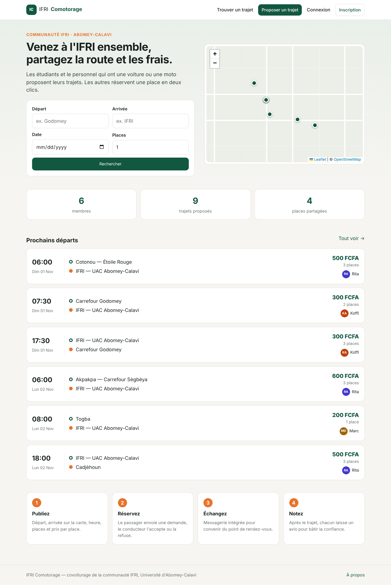
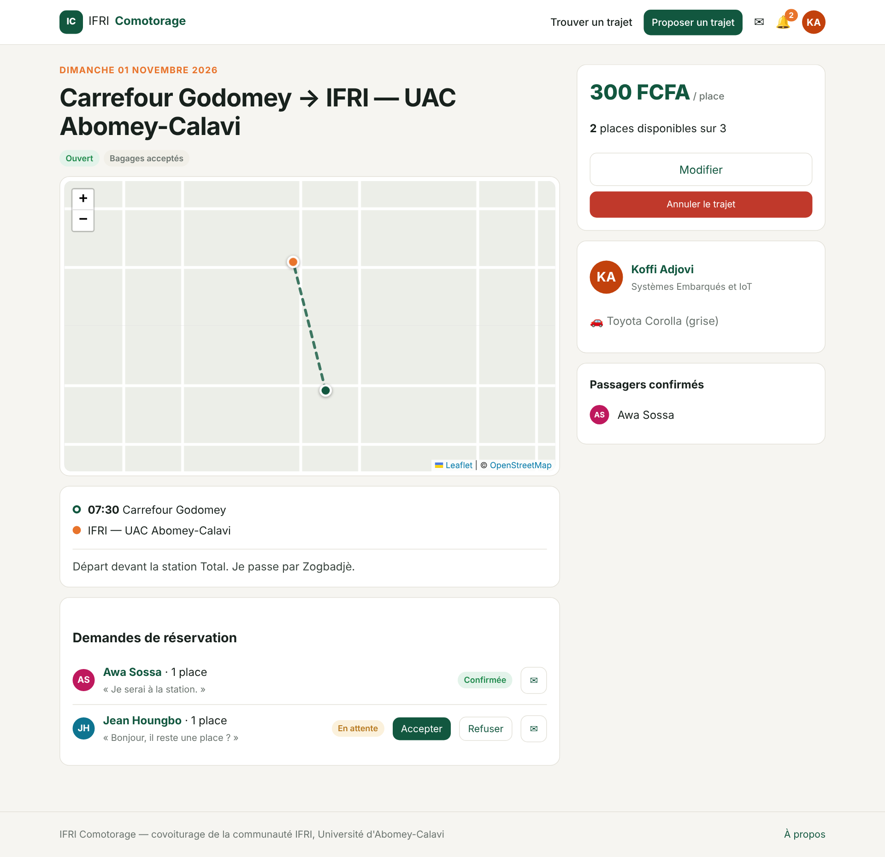
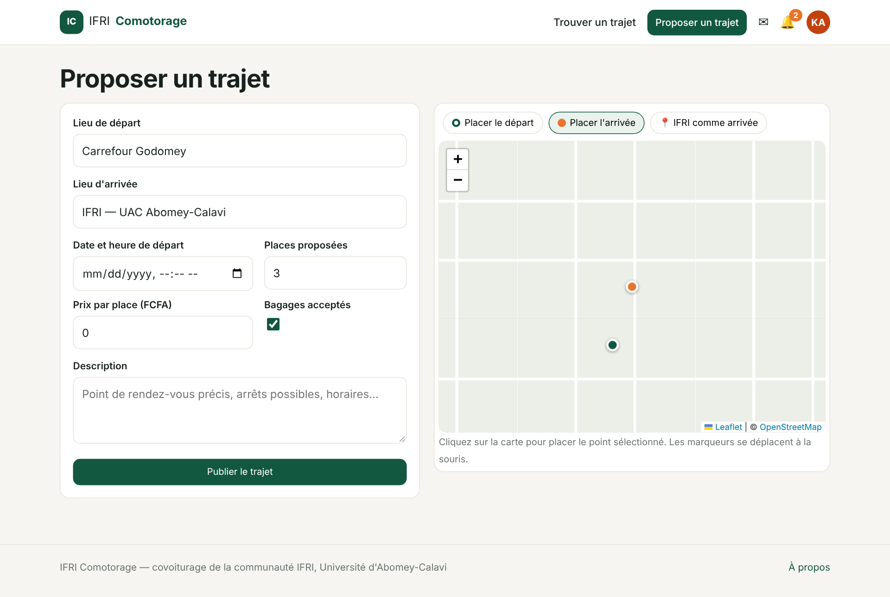
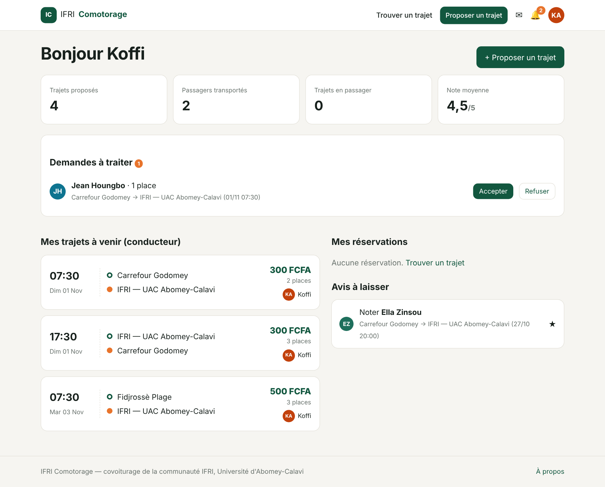

Plateforme de covoiturage de la communauté IFRI — Rapport de projet intégrateur (PIL1, 2024-2025)
Institut de Formation et de Recherche en Informatique — Université d'Abomey-Calavi
Beaucoup d'étudiants de l'IFRI habitent loin du campus d'Abomey-Calavi (Cotonou, Godomey, Akpakpa…). Le trajet quotidien coûte cher en zémidjan et provoque des retards. Pourtant, des étudiants et des membres du personnel font chaque jour le même trajet avec des places libres dans leur voiture ou sur leur moto.
Objectif : une application web qui met en relation conducteurs et passagers de la communauté IFRI. Elle permet de publier un trajet, de le trouver, de réserver une place, d'échanger avec le conducteur et de bâtir la confiance par des avis.
| Module | Fonctionnalités |
|---|---|
| Comptes | Inscription (filière, rôle : passager / conducteur / les deux), connexion, déconnexion |
| Profil | Profil public, note moyenne, avis reçus, véhicule (marque, modèle, couleur, places) |
| Publication | Départ et arrivée placés sur une carte Leaflet, date et heure, places, prix par place, bagages, description |
| Recherche | Filtres par départ, arrivée, date et nombre de places ; pagination |
| Réservation | Demande, acceptation ou refus par le conducteur, annulation par le passager, annulation du trajet par le conducteur |
| Messagerie | Conversations entre membres, liées à un trajet, mises à jour automatiquement |
| Notifications | Demande, acceptation, refus, annulation, message, avis ; compteurs dans le menu |
| Avis | Notation de 1 à 5 étoiles et commentaire, après le trajet, entre le conducteur et ses passagers |
| Tableau de bord | Statistiques, demandes à traiter, trajets et réservations à venir, avis à laisser |
| Application | Rôle |
|---|---|
users | Modèle utilisateur personnalisé (rôle, filière, téléphone) |
login | Inscription, connexion, déconnexion |
profil | Profil public et modification, véhicule |
trajets | Trajets et réservations, recherche, règles de réservation (services.py) |
publication_offre | Formulaire de publication avec carte, modification, annulation |
avis | Avis et règles de notation |
messaging | Conversations, messages, API JSON |
notifications | Notifications et service notifier() utilisé par les autres applications |
dashboard | Tableau de bord de l'utilisateur |
accueil_covoiturage_app | Page d'accueil, à propos |
core | Éléments partagés : compteurs du menu, filtres de templates, données de démonstration |
| Table | Champs principaux |
|---|---|
| User | username, nom, prénom, email (unique), téléphone, rôle, filière, bio |
| Vehicule | propriétaire (1-1), marque, modèle, couleur, places (1 à 8), immatriculation |
| Trajet | conducteur, lieu, latitude et longitude du départ et de l'arrivée, date de départ, places, prix, bagages, statut (ouvert / complet / annulé) |
| Reservation | trajet, passager, places, message, statut (en attente / confirmée / refusée / annulée) ; une seule par passager et par trajet |
| Avis | auteur, cible, trajet, note (1 à 5, contrainte CHECK), commentaire ; un seul par auteur, cible et trajet |
| Conversation, Message | participants, trajet associé ; auteur, contenu, date, lu |
| Notification | destinataire, type, texte, lien, lue |
Le script complet de la base (structure et données de démonstration) est fourni dans base_e_donnees.sql.
Ces règles sont centralisées dans trajets/services.py. Chaque opération s'exécute dans une transaction qui verrouille la ligne du trajet (select_for_update) : deux demandes simultanées ne peuvent pas dépasser le nombre de places.




Sur ces captures, les fonds de carte OpenStreetMap sont remplacés par un fond neutre. En utilisation normale, la vraie carte s'affiche.
32 tests automatisés (python manage.py test) passent sur SQLite et sur MySQL. Ils couvrent :
Les tests ont fait apparaître et corriger plusieurs défauts :